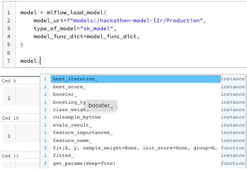

MLflow utils¶
This MLflow utils will be used when we run our workflow jobs in databricks. This would only work in databricks ML runtime cluster.
ML runtime cluster¶
Please only use 11.3 ML runtime cluster, our MLflow version is tied to 1.29.0, which is 11.3 cluster version.

MLflow load model¶
This loads an ML model from a list of allowed model types.
from hip_data_ml_utils.core.config import settings
settings.model_func_dict
Here is how we call the load model function. A successful response will load the model, and raises an exception otherwise
model = mlflow_load_model(
model_uri=f"models:/hackathon-model-l2r/Production",
type_of_model="sk_model",
model_func_dict=settings.model_func_dict,
)
When we have loaded the model, we can just invoke the functions from the type of model.
MLflow load artifact¶
This function load an artifact in an MLflow run.
A successful response will return the artifact, and raises an exception otherwise
# for joblib, pkl, dict
mlflow_load_artifact(
artifact_uri="runs:/xxx/yyy",
artifact_name="overall_evaluation_dataset.joblib",
).head()
# for yaml
mlflow_load_artifact(
artifact_uri="runs:/zzz",
artifact_name="features.yaml",
type_of_artifact="yaml"
)
At the moment, we allow for a few types of loading of artifacts; pkl, joblib, dict and yaml
MLlflow retrieve model evaluation metrics¶
This function retrieves (all of) the model evaluation metrics or just a singular key value
A successful response will return all of the evaluation metrics if no key is specified, or a specific key value metric.
# return a specific key value evaluation metric
mlflow_get_model_metrics(
run_id="xx",
key_value_metrics="mrr_best"
)
# return all evaluation metric
mlflow_get_model_metrics(
run_id="xx",
)
MLlflow retrieve registered run info and run_id¶
This function returns the registered model information from the specified MLflow run_id. And also returns the MLflow run_id of the specified staging tag; Staging, Archived or Production
A successful response will return both specified stage tag of its MLflow run_id, and specified MLflow run_id of its registered model information
mlflow_client = MlflowClient()
mlflow_runid, model_registered_information = mlflow_get_both_registered_model_info_run_id(
name="hackathon-model-l2r",
mlflow_client=mlflow_client,
run_id="xx",
stage="Production"
)
MLlflow promote model¶
This function decides if we need to promote model to the staging tag if there is no model in the specified staging tag, and
A successful response will return a string response to
mlflow_client = MlflowClient()
mlflow_promote_model(
name="hackathon-model-l2r",
retrained_run_id="xx",
retrained_metric=mlflow_get_model_metrics(run_id="xx",key_value_metrics="mrr_best"),
start_date="2022-11-01",
eval_date="2023-02-01",
env="prod",
mlflow_client=mlflow_client,
metrics_name="MRR"
)